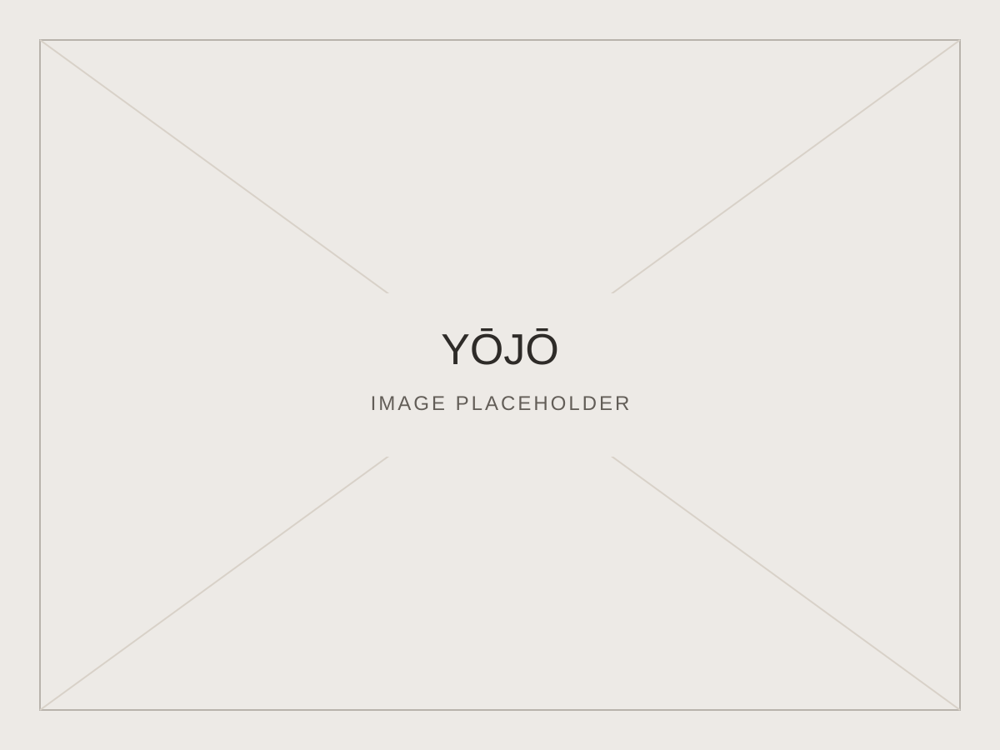

Strawberry matcha
A fresh, colourful direction for someone trying matcha for the first time.
YŌJŌ imagined a more everyday way to enjoy matcha in India. Good drinks, less fuss, and a brand that did not take itself too seriously.

Matcha can feel like something you need to study before you order. We wanted to imagine a version that fitted into an ordinary day.
This project explored a ready-to-drink matcha brand with a lighter voice, a recognisable visual identity, and room for familiar and playful flavours.
Four directions we explored for the YŌJŌ world. These are concept visuals, not products currently for sale.
A fresh, colourful direction for someone trying matcha for the first time.
A softer berry take that brings a little contrast to the green.
A purple and green pairing made for a more indulgent mood.
A familiar flavour to make the idea of matcha feel less new.
YŌJŌ was a chance to think through the whole experience, from the first glimpse of a brand to the moment someone chooses a flavour.
A short, memorable wordmark and a friendly tone gave the idea its own personality.
Forest green, warm cream, playful lettering, and matcha imagery shaped a consistent visual language.
The concept aimed to help people understand the drink without turning it into a lesson.
YŌJŌ was an earlier venture concept. The team later changed direction, but the brand and digital work remain part of that journey.
This site is an archive of the idea. It does not take orders or enquiries.
Concept archive · 2026